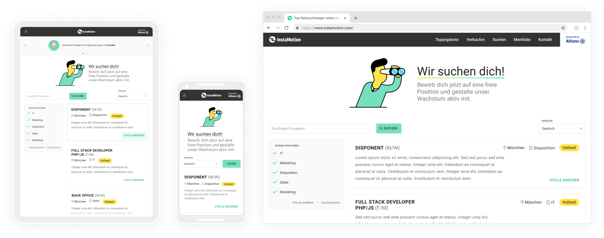
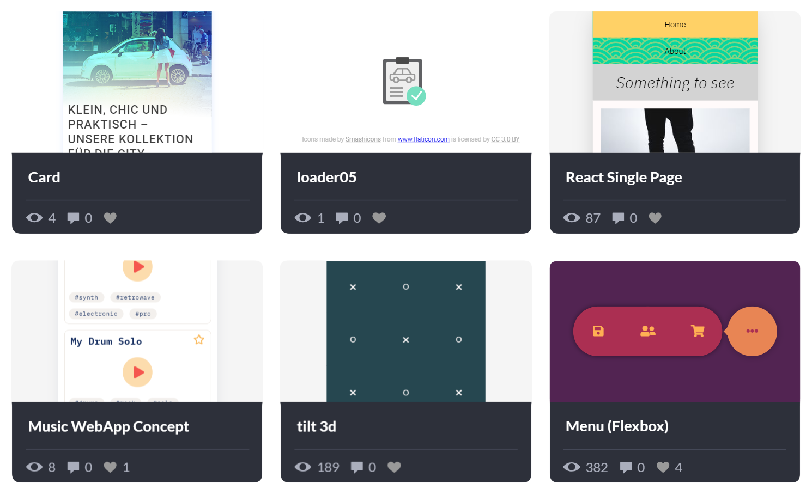
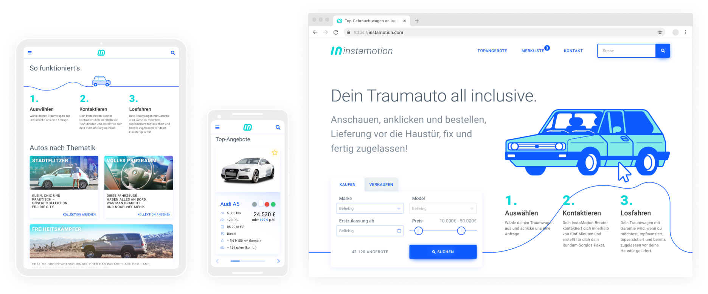

Recent Work
Designing and implementing different elements of e‑commerce website InstaMotion.com.
Examples of my work in CodePen. Sometimes I use it to make a quick prototype or to show an Idea for a UI element.
As a part of my bachelor’s thesis, I worked on a redesign of InstaMotion.com. The work includes analysis of problems with usability and development of a new Look and Feel.
